BCSE302L · VIT
Database Systems FAT Study Guide
What to study first
- Start with ER/EER design and normalization. Turn one scenario into an ER diagram and then relations. Take a separate set of functional dependencies from candidate keys through normal-form diagnosis and decomposition.
- Reserve a full practice block for Module 4. Work a B+ tree insert/delete sequence, then write relational algebra and optimize a query tree. Add one static and one extendible hashing drill once both main tasks are reliable.
- Practise schedules, locks and recovery as separate calculations. On one schedule, find conflict and read-from dependencies. On another, track lock grants and waits. For crash recovery, work from the log and the commit status.
- Secure the architecture and NoSQL questions. Draw the three schemas from memory and apply both types of independence to the same case. For NoSQL, choose a model from an access pattern and explain what a partition forces the application to give up.
Finish with one timed recent paper. All five November 2024 to late-2025 papers used a three-hour, 100-mark format with ten 10-mark slots. Aim for about 18 minutes per slot, read which branches are joined by OR, and mark every part you skipped when you review.
Papers and counting method
The sample runs from April/May 2023 to November/December 2025. It contains eight distinct actual BCSE302L FATs, including the November 2024 A1 paper reproduced in its answer key. Two scans of the same November 2025 B2 paper count once. The July/August 2023 F2 header identifies it as a Fall Inter Semester 2022–23 paper.
A topic counts once per paper when the prompt asks students to use or explain it, including an OR branch. A topic is compulsory when at least one required part tests it regardless of which choices a student makes. Topic counts can overlap. The separate model FAT is mentioned for practice where relevant and excluded from all counts. Module assignments follow the Fall 2026–27 VTOP syllabus.
Module 1
Database systems concepts and architecture
All 8 papers tested this in compulsory Q1. Seven devoted 10 marks to Module 1. E1 in late 2025 set 7 marks on three-schema architecture and 3 on the DBMS components for concurrent transactions and recovery.
What to focus on
- Three schemas, abstraction and independence · 6/8. Five papers wanted the view, conceptual and storage levels. Four explicitly asked about independence. Practise the two mappings and one example of each kind of independence. For physical independence, add an index while keeping the tables and queries usable. For logical independence, split a table and preserve an existing read view with a lossless join.
- Centralized and client/server architecture · 2/8. One direct comparison and one open-ended retailer design. Draw the deployment and label where the user interface, application logic, DBMS and data live. Compare scaling, administration, network dependence and bottlenecks. A single DB server can serve many clients.
- Small variants. Know schema versus state (1/8), catalog and why modeling matters (1/8), and the roles of the transaction, concurrency-control and recovery managers (the 3-mark E1 crossover). After these, skim DBMS benefits over files, classifications and DBA responsibilities from the syllabus.
What a finished answer shows
Identify whether the question asks about levels of data abstraction, deployment tiers, or DBMS components. Use one domain throughout your diagram and examples. For each independence example, name the changed layer, the mapping that absorbs the change and the interface that stays usable. Changing a row changes the database state. Changing a column definition or constraint changes the schema.
Practise on original FAT questions
A1 Jul 2023 Q1 · Abstraction and the catalog
Use course registration to link a student or registrar view to the shared conceptual tables and then to storage. Explain how catalog metadata and mappings help the DBMS preserve the interface.
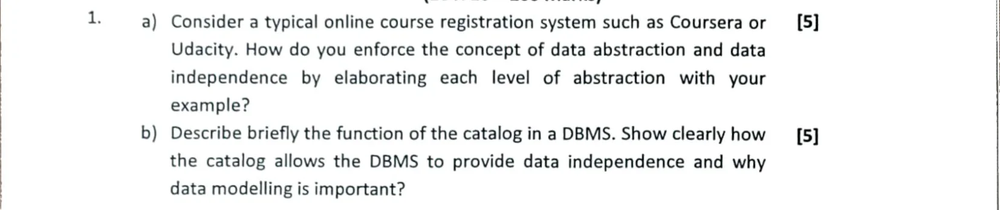
A2 Nov 2024 Q1 · Schema versus state and both types of independence
Use the same relation to show a schema and two valid states. Give one change at the internal level and one at the conceptual level.
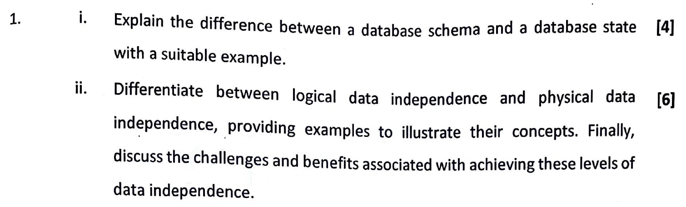
B1 Nov 2025 Q1 · Centralized versus client/server
E1 Nov/Dec 2025 Q1 · Banking architecture and transaction components
Allocate the two parts according to their 7 and 3 marks. Use bank views, ledger tables and storage in the diagram, then explain which components handle concurrent updates and crash recovery.
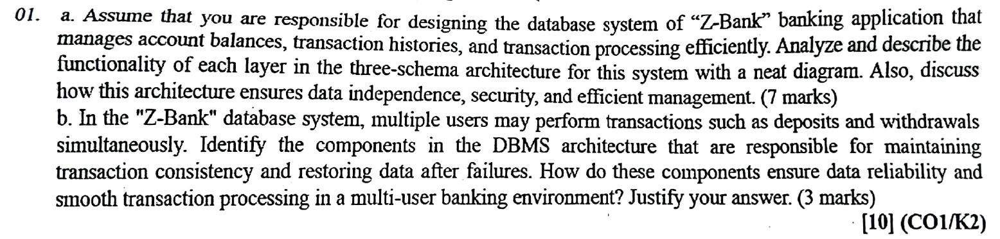
Evidence from each paper
| FAT sitting | Questions |
|---|---|
| B2 Apr/May 2023 | Part A Q1 · Airline booking through storage, conceptual tables and user views. Explain the mappings. |
| A1 Jul 2023 | Q1(a–b) · Abstraction, independence, catalog and the role of data modeling in course registration. |
| F2 Jul/Aug 2023 | Q1(a–b) · Choose and justify an architecture for a growing retailer. |
| A1 Nov 2024 | Q1 · Three-schema architecture, interlevel interaction and mappings. |
| A2 Nov 2024 | Q1(i–ii) · Schema versus state, logical and physical independence, benefits and challenges. |
| B1 Nov 2025 | Q1 · Centralized versus client/server architectures and trade-offs. |
| B2 Nov 2025 | Q1 · Three-schema architecture and both kinds of independence with examples. |
| E1 Nov/Dec 2025 | Q1(a–b) · Three schemas for a bank (7 marks). Concurrency and recovery components (3 marks, shared with Modules 5–6). |
Module 2
Relational model and ER modeling
All 8 papers required a Module 2 answer. Scenario → ER/EER appeared on 7/8 and was compulsory on six. The November 2024 A2 Q2 offered design or mapping, both in this module.
What to focus on
- Turn a scenario into a diagram · 7/8. Identify entities, IDs, relationship roles and attributes. For each end independently, ask how many instances can participate and whether zero is allowed. Use the requested notation. Practise one straightforward Chen diagram and one dense university or bank case. Put Grade on Enrollment, Quantity on OrderLine and other attributes on the relationship whose occurrence determines the value.
- Map a diagram to relations · 4/8, compulsory in 3. Work both from a supplied diagram and from your own. Put the 1-side key on the N-side relation, add a junction relation for M:N and keep a ternary fact together with three FKs. Use uniqueness for a 1:1 maximum, and use a required FK when participation is mandatory on the referencing side. Minimum participation on the referenced side can require an additional constraint. Flatten composite attributes and move multivalued attributes to a separate relation. For a weak entity, include its owner key and partial key.
- EER features or framing · 4/8. Draw one superclass/subclass diagram and label both disjoint or overlapping and total or partial. Show how the subtype's key references the superclass. November 2024 A1 asked for dedicated theory on generalization, specialization and both constraints. E1 allowed aggregation where the scenario justifies treating a relationship occurrence as a unit. Practise the subtypes first.
- Integrity inside the mapping. Show PK, FK target, domain and NULL constraints where they enforce a stated rule. No paper asked a standalone NULL or keys-definition question. Save the candidate-key calculations from FDs for Module 3.
What a finished answer shows
Write the modeling assumptions that affect the diagram, then check every relationship against two possible instances and one instance with zero participation. In a mapping answer, list a relation per line with the PK and every FK target. Check that a bank account can have joint owners, that Grade belongs to one student–offering pair and that an exam result still identifies the patient, doctor and exam together.
Practise on original FAT questions
B1 Nov 2025 Q2 · University ER diagram in Chen notation
Draw the diagram in the required notation, then name the attribute types and show where Enrollment owns Grade.
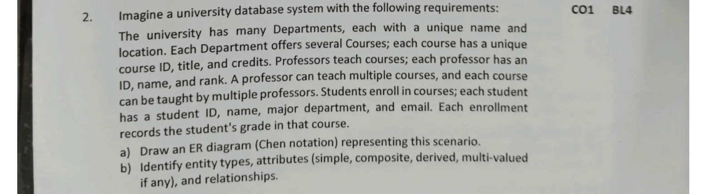
B2 Apr/May 2023 Q5 · Draw and map one design
Draw the shopping relationships and map them to relations. Explain which keys enforce the order–product and order–payment rules.
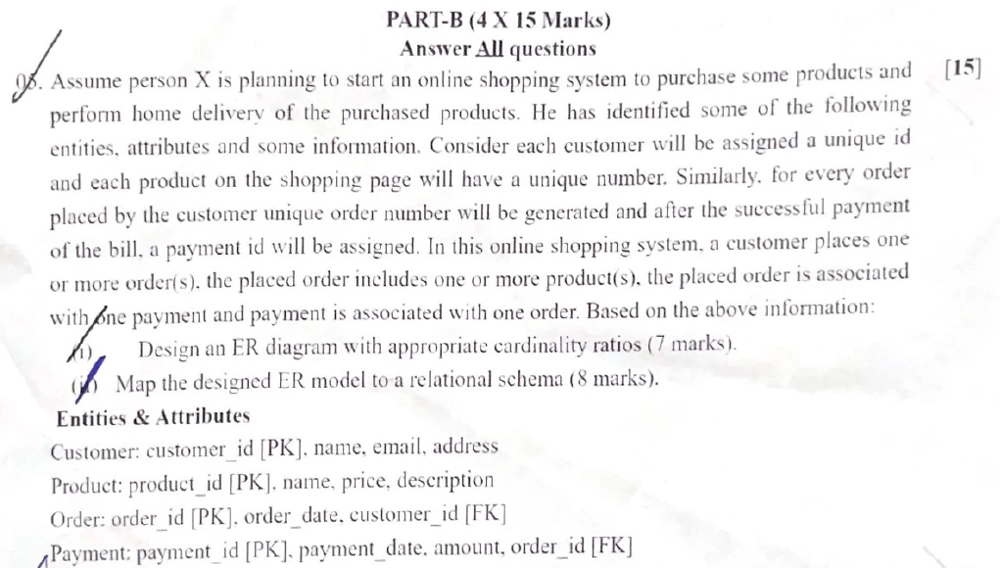
A2 Nov 2024 Q2(a) OR Q2(b) · EER design or mapping a supplied diagram
Try both branches in separate attempts. In the mapping branch, account for multivalued phone numbers, the ternary association, relationship attributes and the 1:1 link.
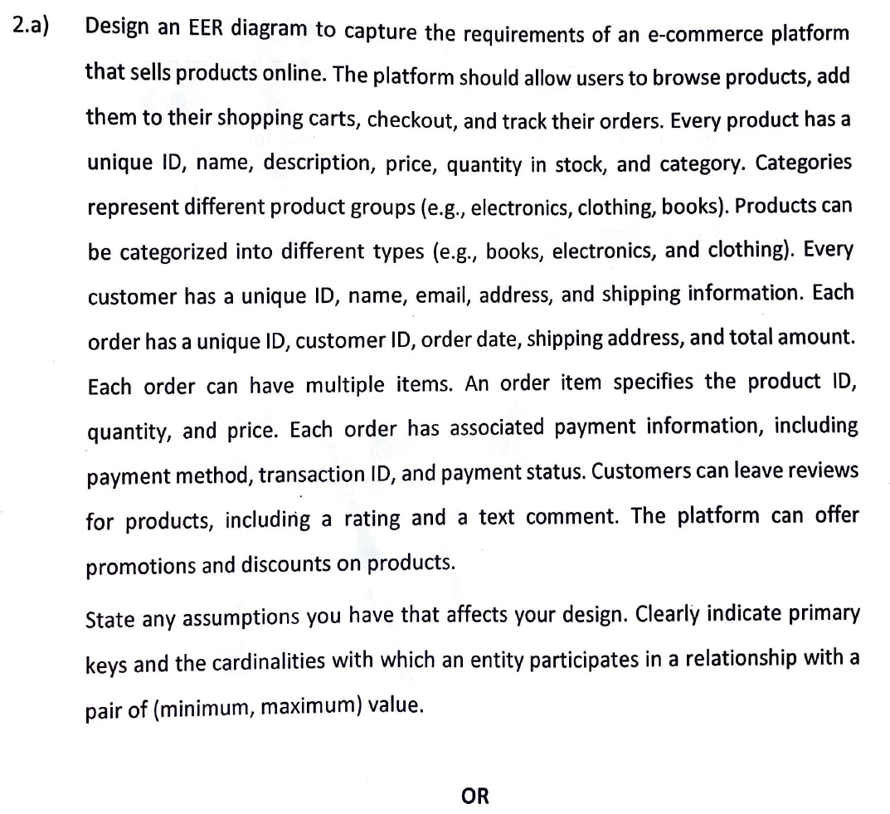
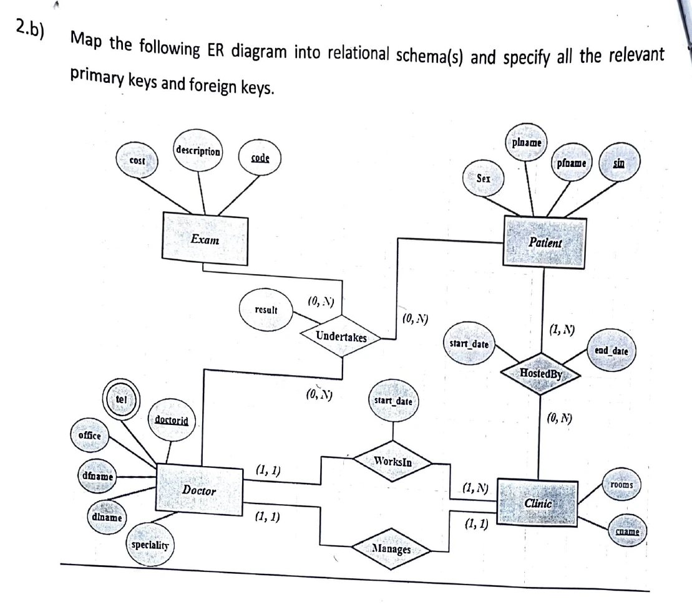
E1 Nov/Dec 2025 Q2 · Academic management EER with a continuation page
Give Course and Course Offering distinct identifiers. Put grades on Enrollment, model the student subtypes and include both roles in the prerequisite relationship from page 2.
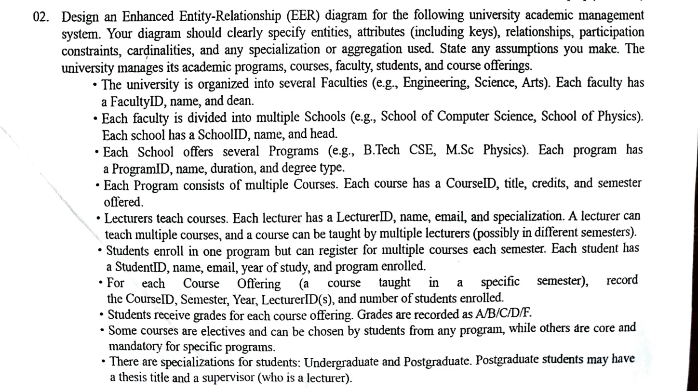
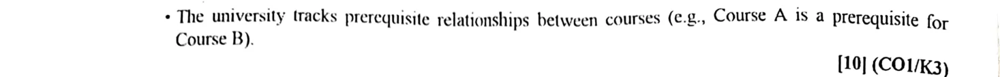
Evidence from each paper
| FAT sitting | Questions |
|---|---|
| B2 Apr/May 2023 | Part B Q5(i–ii) · Shopping ER and relational mapping, both required (7 + 8 marks). |
| A1 Jul 2023 | Q2 · Airline administration ER with participation constraints. |
| F2 Jul/Aug 2023 | Q2(a–b) · Map a supplied Student–Course–Lecturer–Subject diagram. Explain keys and constraints. |
| A1 Nov 2024 | Q2 · Hospital ER. Q3 · Generalization, specialization, disjointness and completeness. Both required. |
| A2 Nov 2024 | Q2(a) OR Q2(b) · E-commerce EER with min–max constraints or map the supplied medical-exam diagram. |
| B1 Nov 2025 | Q2(a–b) · University ER in Chen notation, followed by classification of entity, attribute and relationship types. |
| B2 Nov 2025 | Q2 · Bank ER with joint accounts, account subtypes and loans. Q3 · Map the diagram from Q2. |
| E1 Nov/Dec 2025 | Q2 · Academic EER with teaching, offerings, enrollments, grade, subtypes and prerequisites. |
Module 3
Relational database design
All 8 papers tested this module in required questions. Four allocated 20 marks and one older paper allocated 15. Classification or normalization appeared on 7/8, with 6/8 asking you to construct a decomposition.
What to focus on
- Closures, keys and Armstrong’s axioms. Three papers expressly asked for candidate keys and three for named inference rules. For X⁺, start with X and apply FDs until no attribute can be added. Begin key search with attributes absent from every RHS. For each candidate, show full closure and minimality. Mark attributes belonging to at least one candidate key as prime. For a proof, name reflexivity, augmentation or transitivity where used.
- 1NF through 3NF and BCNF · 7/8 across the family. Practise from a supplied FD set and from a raw table or business rules. State the row meaning first, then separate repeating values while keeping paired attributes together. Check dependencies of nonprime attributes on proper subsets of candidate keys for 2NF. A nontrivial X → A satisfies 3NF if X is a superkey or A is prime. BCNF requires X to be a superkey and was tested on 3/8.
- Practise both decomposition methods. For 3NF synthesis, make a relation for each determinant and its dependent attributes in a minimal cover, remove contained relations, and add a key relation if none contains a candidate key. For BCNF, take a violating FD X → Y and split R into X ∪ Y and R − (Y − X). Recheck each component under the projected FDs.
- Lossless join and dependency preservation · 3/8 combined. For a binary split, compute the closure of the shared attributes under the original FDs and check whether it contains a whole component. For preservation, project implied FDs onto each component, take their union and test the original dependencies with closures. A successful lossless check leaves preservation to be tested separately.
- Minimal cover and equivalent FD sets. Cover and redundancy appeared on 2/8 and equivalence on 1/8. Split RHSs into single attributes. Test an extraneous LHS attribute with the closure of the smaller determinant. Test a redundant whole FD with that FD removed. For equivalence test every FD in each direction.
- 4NF and 5NF later. Neither appeared in the eight actual papers. Both are in the current syllabus and the separate model FAT Q6. After 3NF and BCNF, practise splitting independent multivalued facts for 4NF and checking whether three projections can be joined back under a join dependency for 5NF.
What a finished answer shows
Start with the keys and state any business assumptions needed to infer FDs. Two rows can refute an FD. A rule about all legal rows is what justifies it. Give the exact FD and normal-form condition behind each split, then list each component's key and relevant FDs. If asked for anomalies, show what a concrete update, insert or delete would break in the given table.
Practise on original FAT questions
B1 Nov 2025 Q3 · Closure with named inference steps
A2 Nov 2024 Q3 · All candidate keys and decomposition through BCNF
Find the candidate keys and prime attributes before testing the current form. Show every split requested through BCNF.
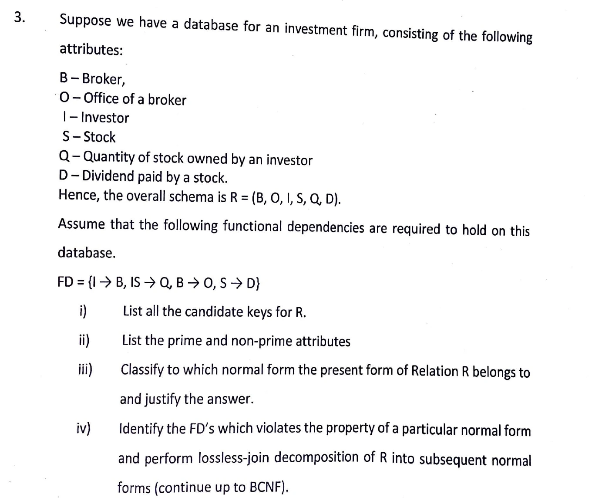
E1 Nov/Dec 2025 Q4 · Anomalies and normalization from a raw table
Use a specific row for each anomaly. State what makes one order line unique and what the total price depends on before decomposing.
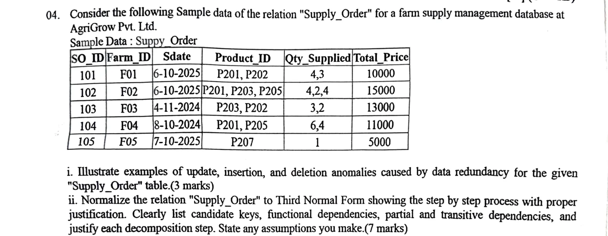
A1 Jul 2023 Q4 · Losslessness and preservation as separate tests
Compute each intersection closure. For the lossless split, project the FDs and test preservation independently.
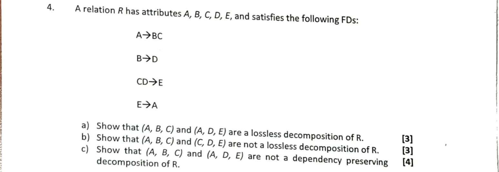
Evidence from each paper
| FAT sitting | Questions |
|---|---|
| B2 Apr/May 2023 | Part B Q6(i–ii) · Redundant FD proof, minimal cover, candidate keys and BCNF. |
| A1 Jul 2023 | Q3(a–b) · Diagnose 2NF, 3NF and BCNF and prove an FD with Armstrong’s axioms. Q4(a–c) · Losslessness and dependency preservation. |
| F2 Jul/Aug 2023 | Q3 · Normalize a book and tutor table through 3NF and justify violations at each stage. |
| A1 Nov 2024 | Q4 · Dependency preservation for a supplied decomposition. Q5 · Decompose to 3NF. |
| A2 Nov 2024 | Q3(i–iv) · Keys, prime attributes and steps through BCNF. Q4(i–ii) · FD-set equivalence and losslessness. |
| B1 Nov 2025 | Q3 · Attribute closure with an explanation of the inference steps. |
| B2 Nov 2025 | Q4 · Student–course schema through 3NF, with FDs at each stage. |
| E1 Nov/Dec 2025 | Q3(a–b) · Derive FDs, minimal cover and implication proof. Q4(i–ii) · Supply-order anomalies, keys and 3NF. |
Module 4
Physical database design and query processing
All 8 papers required a Module 4 answer. In two, the choices were between different formats inside this module. Build confidence in both B+ trees and relational algebra before counting on a particular branch.
What to focus on
- B+ tree construction · 6/8, compulsory in 4. Deletion appeared on 4/8. Practise orders 3 and 4. State the convention for maximum children and leaf entries unless the paper supplies it. Copy up the first key of the right leaf on a leaf split and move a separator up on an internal split. For deletion, update separators, redistribute before merging if possible, repair the parent and contract a one-child root. Mark linked leaves and show every intermediate state that the question asks for. For a range scan, descend once and follow the leaves.
- Relational algebra and query plans · 6/8 combined. Five explicitly ask for algebra, four for plan choice or rewriting. Write the output grain and the join keys first. Practise a multi-table join, difference on IDs for a never-borrowed query, grouping by publisher, and a correlated EXISTS translated using the set of qualifying keys. In the optimized tree, split conjunctions, push single-relation selections to the leaves, replace product-plus-condition with joins, and project early while retaining all later join and filter columns.
- Hashing · 4/8, compulsory in 2. Know a static hashed file with bucket overflow, open addressing with quadratic or double hashing, and extendible hashing. For probing, write each attempted slot and reset the counter for each key. A probe sequence may cycle before reaching every empty slot. For extendible hashing, use the requested bits, label global and local depth, and double the directory only when the overflowing bucket already has local depth equal to global depth.
- Small syllabus pass. General multilevel indexing had one dedicated question. Draw index blocks and an index on those blocks, then walk a lookup. Review heap, sorted and hashed files, dense versus sparse indexes, when indexed or hash joins fit, and safe tuple relational calculus after the recurring drills. The sample had no direct standalone TRC, heap/sorted-file or numerical query-cost question.
What a finished answer shows
For trees and hashing, show the state at every split, merge or collision relevant to the instructions. For algebra, qualify repeated column names and use IDs for joins and differences. For query trees, label the rewrite and check that every requested column and predicate survives. A2’s B+ tree page-locking subpart is a Module 6 crossover. Be able to explain why a long-held root lock can make independent leaf updates wait.
Practise on original FAT questions
E1 Nov/Dec 2025 Q5 · B+ tree insertion and deletion
Insert the names in the given order using a consistent key order. On each deletion check underflow, separators and the linked leaf sequence.
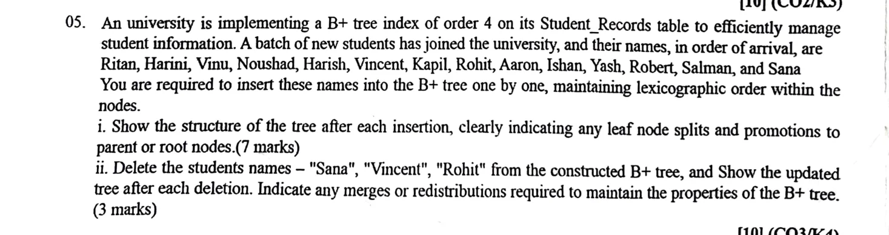
A1 Jul 2023 Q5 · SQL, equivalent algebra and query trees
Use all three supplied tables. Draw the initial and rewritten trees and check their output rows against the sample.
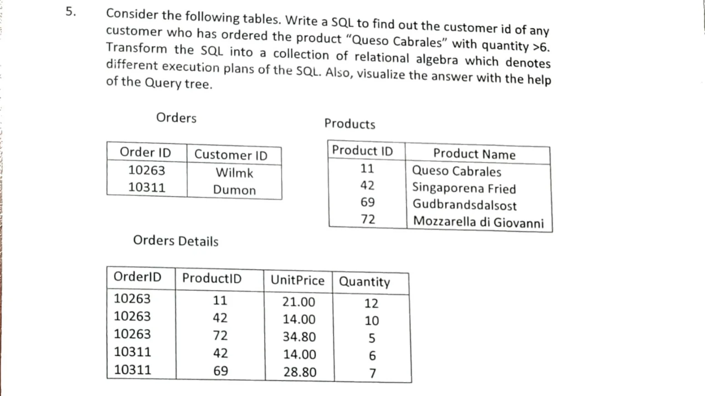
B1 Nov 2025 Q4 · Correlated EXISTS and algebraic optimization
Find the set of departments with a qualifying project, then retain employees from those departments. Explain how your algebra avoids multiplying employee rows for multiple qualifying projects.
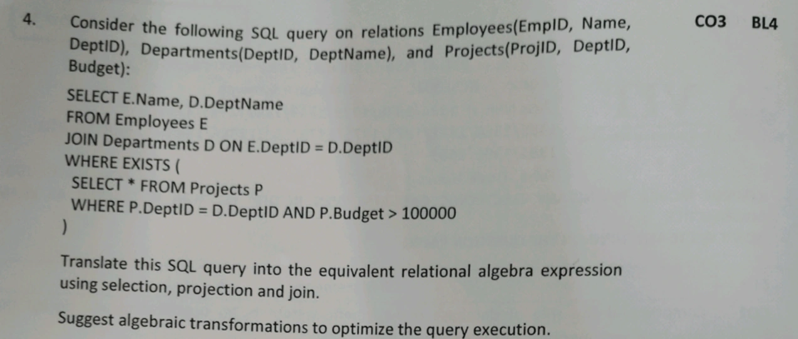
E1 Nov/Dec 2025 Q6 · Static buckets, quadratic probing and capacity
Show the overflow chains, trace the seven-slot probe sequence and then address the redesign on the continuation page. Eleven distinct keys need at least eleven one-record slots.
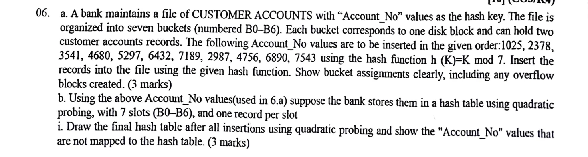
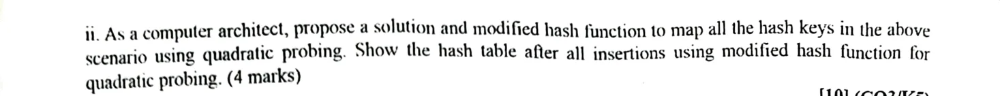
A2 Nov 2024 Q5(b)(i) · Extendible hashing
Work this 5-mark subpart with the given suffix bits. Show which directory entries share a bucket before and after each split.
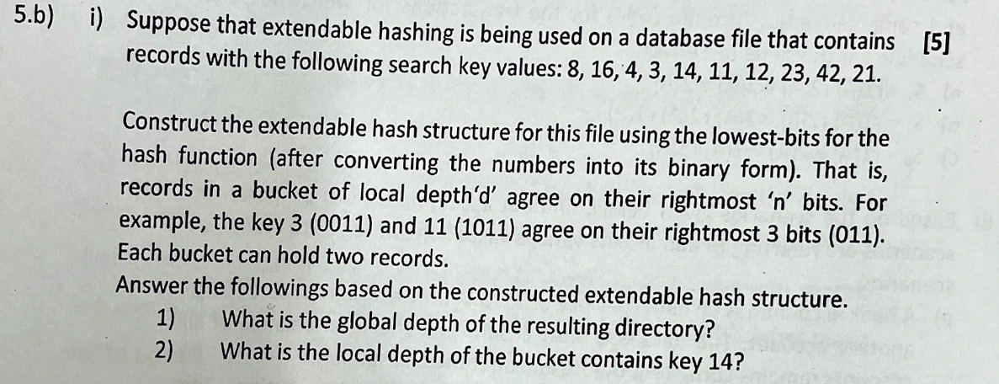
Evidence from each paper
| FAT sitting | Questions |
|---|---|
| B2 Apr/May 2023 | Part B Q7(i–ii) · Heuristic query tree and order-4 B+ tree with insertions and deletions. |
| A1 Jul 2023 | Q5 · SQL, algebra and query trees for three tables. Q6 · B+ insertions with four checkpoints. |
| F2 Jul/Aug 2023 | Q8(a–c) · Write algebra and optimize a query tree, then trace open addressing. |
| A1 Nov 2024 | Q9 choice · Month-name B+ tree with deletions OR quadratic probing and double hashing. |
| A2 Nov 2024 | Q5(a) OR Q5(b)(i–ii) · B+ insert/delete OR extendible hashing plus publication-database algebra. Q9(i) · B+ tree index locking crossover. |
| B1 Nov 2025 | Q4 · Correlated EXISTS to algebra and rewrites. Q8 · B+ construction, B-tree comparison and range scan. |
| B2 Nov 2025 | Q5 · General multilevel indexing. Q6(i–v) · Library algebra including a count and books never borrowed. |
| E1 Nov/Dec 2025 | Q5 · Order-4 B+ insertion and deletion. Q6(a–b) · Static buckets, quadratic probing and redesign. |
Module 5
Transaction processing and recovery
All 8 papers required a Module 5 answer. Schedule serializability and recovery each appeared on 6/8. Practise them as two independent written routines.
What to focus on
- Conflict graphs and serial orders · 6/8 for serializability overall. Five explicitly tested conflict serializability, four explicitly mentioned precedence graphs and five wanted a serial order. Compare operations by item. An edge goes from the earlier transaction to the later one when they access the same item and at least one writes. Include isolated vertices, justify each edge with an operation pair and show a real cycle or a topological order. Branch at each tie when asked for every order.
- Log recovery · 4/8, including 2 that made you write logs. Practise deferred and immediate update from the same transaction sequence. For the course's NO-UNDO/REDO model, unfinished updates remain private and the log carries the new value. For UNDO/REDO, write the old and new values and record the observed commits. WAL requires the update log to be durable before the corresponding page reaches disk. Use the committed writes for redo and work backward through updates that must be undone. State the checkpoint and concurrency assumptions when they affect the calculation.
- Shadow paging · 3/8. Draw the current and saved page tables. Copy an updated page to a new location, flush the new pages and table, then show the atomic switch of the durable pointer. Explain which table a crash leaves reachable on either side of the switch. Know the fragmentation and reclamation costs.
- Recoverable, cascadeless and strict schedules · 2/8. For every read, find the last writer of the item. Recoverable checks whether the writer commits before the reader commits. Cascadeless checks whether the writer commits before the read. Strict also forbids a dirty write. If a schedule leaves commit times out, give the condition on their order.
- ACID and states · 1/8 each as direct prompts. Pair the four properties with observable tests, such as crashing after commit acknowledgement to test durability. Draw Active → Partially committed → Committed, and the failure path through Failed to Aborted and restart or termination. View serializability was unnamed across the actual papers. For a general equivalence question, check initial reads, read-from relationships and final writers after the conflict test.
What a finished answer shows
Use separate columns for conflict serializability and recoverability. For a crash trace, tabulate the time, observed transaction action, old and new values, and commit status. The value a transaction read earlier can differ from the value immediately before its write. In the E1 timeline, a later committed write overwrites an uncommitted one. Account for that dependency before claiming a naïve before-image restore gives the final state.
Practise on original FAT questions
A2 Nov 2024 Q6 · Precedence graphs and ACID tests
Find all permitted orders where they exist. Where a cycle appears, use the rest of the prompt to decide whether you also need a witness about the effect of a serial execution. Give one observable test per ACID scenario.
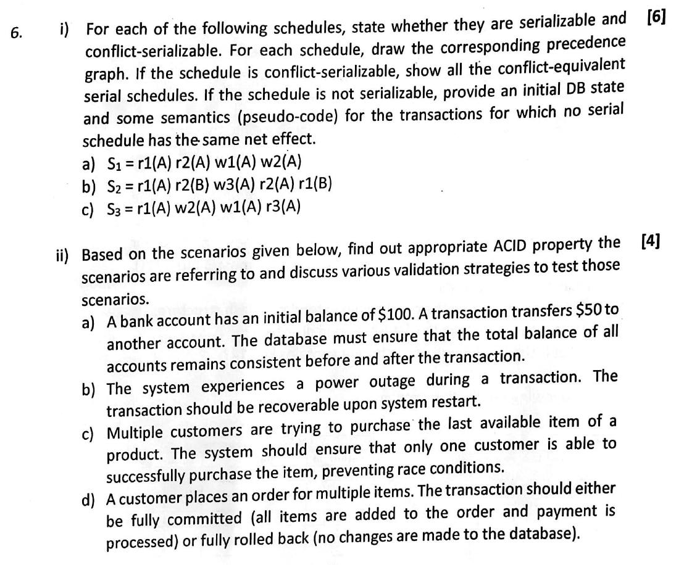
A2 Nov 2024 Q7 · Six schedules and four separate classifications
Make a grid with one row per schedule. Justify each failed test with a conflicting pair, read-from dependency or dirty write.
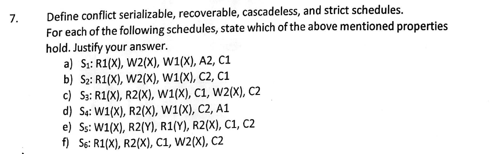
E1 Nov/Dec 2025 Q7 · Serial orders from a graph and recovery after a crash
Enumerate the orders first. Then run both logging schemes on the same timeline, mark committed and unfinished transactions, and justify the recovered value.
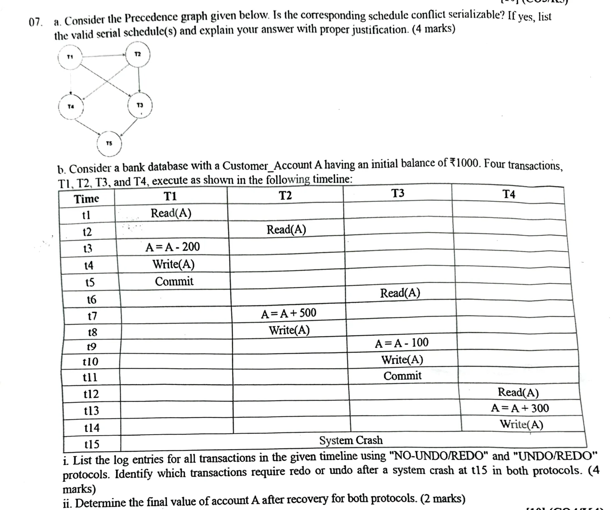
B2 Nov 2025 Q8 · Transaction states and shadow paging
Draw state transitions and both page tables from memory. Show which pointer a restart follows before and after commit.
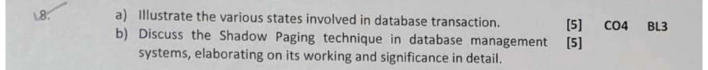
Evidence from each paper
| FAT sitting | Questions |
|---|---|
| B2 Apr/May 2023 | Part A Q2 · Conflict serializability, recoverability and a serial order. Commit times are omitted. |
| A1 Jul 2023 | Q7 · Test three schedules. Q9(a) · Explain shadow paging. |
| F2 Jul/Aug 2023 | Q4(a–b) · Recovery approaches and full deferred/immediate logs for two transfers. |
| A1 Nov 2024 | Q6(i–ii) · Recognize deferred update and shadow paging from scenarios. Q7's schedule anomalies are Module 6 in the current syllabus. |
| A2 Nov 2024 | Q6(i–ii) · Serial orders or counterexample, plus four ACID cases. Q7 · Serializability, recoverability, cascadelessness and strictness. |
| B1 Nov 2025 | Q5 · Conflict testing with a graph. Optional Q9(b) · Immediate update, checkpointing and compensation log records. |
| B2 Nov 2025 | Q7(a–d) · Classify and construct schedules. Q8(a–b) · States and shadow paging. |
| E1 Nov/Dec 2025 | Q7(a–b) · Serial orders from a supplied graph and a four-transaction crash log. Q1(b) overlaps DBMS components. |
Module 6
Concurrency control in transaction processing
All 8 papers required Module 6 content. November 2025 B2 required a choice between 2PL with deadlock and multigranularity locking. Nov/Dec 2025 E1 required both a locking question and a separate timestamp trace.
What to focus on
- Lock modes and protocols · 7/8. 2PL or named variants · 6/8. For each request, record the holders, requested mode, grant or wait, and locks retained afterward. Two different transactions can hold S on the same item. An X request conflicts with another transaction’s S or X. In basic 2PL, acquiring and upgrading belong to growth, releasing and downgrading to shrinking. Mark the final acquisition or upgrade as the lock point. Strict 2PL keeps X locks through commit or abort. Rigorous keeps S and X. Conservative acquires the full set before processing. Basic 2PL guarantees conflict serializability even though it permits deadlock and can allow cascading rollback.
- Deadlocks · 6/8, including wait-for graphs in 3. Draw waiter → holder for each blocking lock. Find an actual cycle. To resolve it, select a victim in the cycle, roll it back, release its locks and recheck. For prevention, practise global lock order, wait-die and wound-wait. In wait-die, an older requester may wait and a younger one aborts. In wound-wait, an older requester aborts the younger holder and a younger requester may wait. Explain the one-direction age ordering of wait edges, and keep the original timestamp on a retry.
- Timestamp ordering · 3/8. Thomas write rule · 1/8. Keep ReadTS and WriteTS for each item. A read older than the last write aborts. For a write, test ReadTS first. If a newer reader has already read the item, abort under both rules. If only WriteTS is newer, basic TO aborts and Thomas ignores the obsolete write. Update timestamps only on accepted operations, and remove later operations of an aborted transaction unless the schedule restarts it. For strict TO, explain the wait for a prior uncommitted writer before an otherwise permitted access.
- Lost update, dirty read and nonrepeatable read · 3/8. Show the specific operations and values that create the anomaly. For a lost update, show both reads of the old value and the final overwrite. For a dirty read, identify the writer that had yet to commit. For a nonrepeatable read, point to the write between the two reads.
- Multigranularity · 1/8 as an OR choice. Drill IX down to the parent then X on the tuple. Compare with IS on the database and S on the table for a full scan. Spot where the table modes conflict and release descendants first. The tree protocol had no standalone prompt. Review its parent-lock requirement, the prohibition on relocking a released node, and how those rules differ from 2PL.
What a finished answer shows
Show the operation that gets blocked or rejected and which rule causes it. A wait-for edge points from a waiter to the holder. A precedence edge points from an earlier conflicting operation to a later one. In a trace with missing queue or commit rules, state your assumptions before assigning outcomes. The Nov 2024 A1 Q10 key misstates basic 2PL’s serializability guarantee. Use the protocol rules when checking that example.
Practise on original FAT questions
B2 Apr/May 2023 Q8 · S/X grants and wait-for graphs
Start both request streams from empty lock tables. Track conversions and blocked transactions, then derive each graph from live lock conflicts.
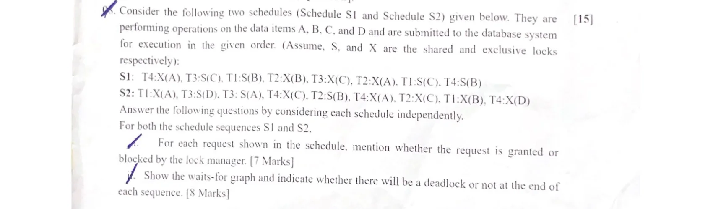
F2 Jul/Aug 2023 Q9 · Anomalies and three locking schedules
State how you order operations within a shared time row. Identify the concrete anomaly, then place locks and unlocks for basic, strict and rigorous 2PL.
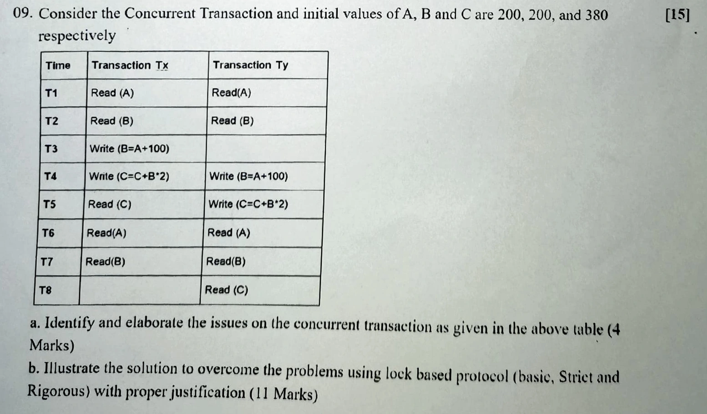
E1 Nov/Dec 2025 Q9 · Timestamp ordering and Thomas write rule
Trace both timestamp tables. Check which timestamp rejects the first failing write and whether Thomas’s rule changes that verdict.
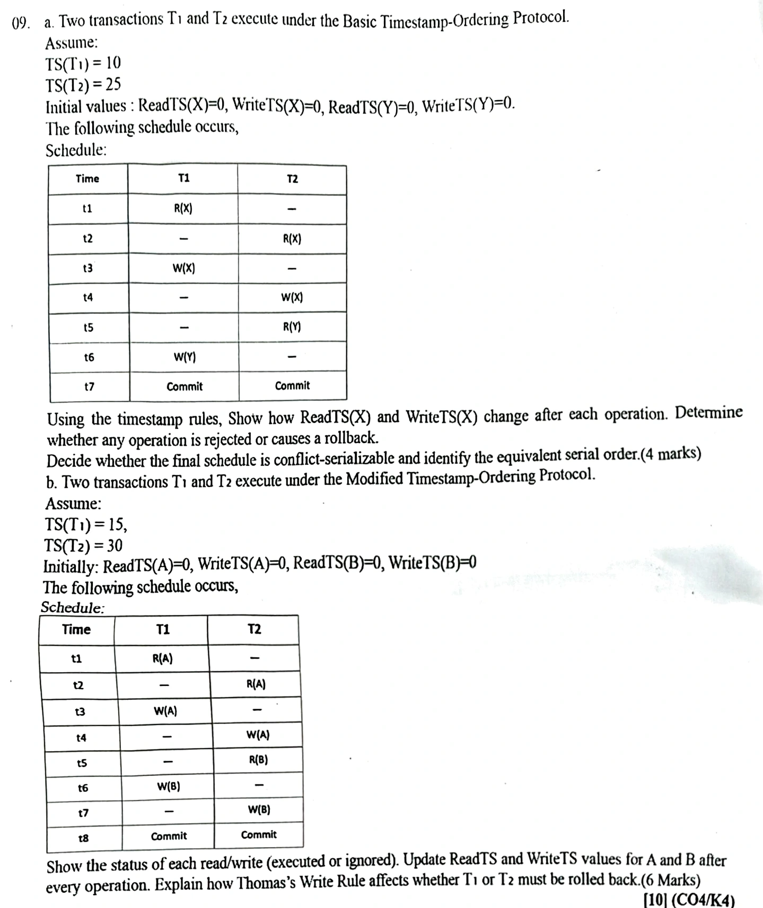
B2 Nov 2025 Q9(a) OR Q9(b) · Three-way deadlock or an intention-lock hierarchy
For (a), build the wait cycle and show a revised acquisition order. For (b), draw database, table, page and tuple levels and mark where a table scan and a tuple update conflict.
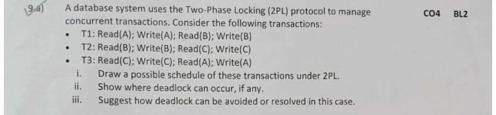
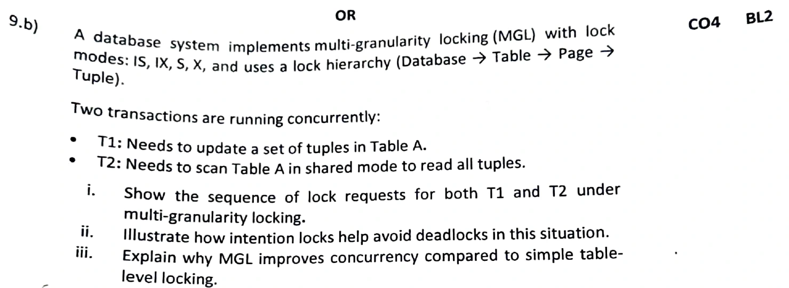
Evidence from each paper
| FAT sitting | Questions |
|---|---|
| B2 Apr/May 2023 | Part B Q8 · Compulsory S/X grant or block traces and two wait-for graphs (15 marks). |
| A1 Jul 2023 | Q8 · Basic versus strict timestamp ordering. Q9(b) · Wait-die and wound-wait. Both required. |
| F2 Jul/Aug 2023 | Q9(a–b) · Diagnose anomalies and apply basic, strict and rigorous locking (15 marks). |
| A1 Nov 2024 | Q7 · Required anomaly classification. Q10 · 2PL and a serializability demonstration OR a timestamp trace. |
| A2 Nov 2024 | Q8 · Binary and S/X locks with prevention trade-offs. Q9(i–ii) · Index-page locking and a strict 2PL schedule. |
| B1 Nov 2025 | Q6 · Required 2PL variants. Optional Q9(a) · Bank anomalies and deadlock. Optional Q10(b) · Deadlock and wait-for graph. |
| B2 Nov 2025 | Q9(a) OR Q9(b) · 2PL with a three-transaction deadlock or multigranularity locking with intentions. |
| E1 Nov/Dec 2025 | Q8 · Required wait-for graph and lock trace. Q9 · Required basic TO and Thomas write rule. Q1(b) overlaps DBMS components. |
Module 7
NoSQL database management
All 8 papers required 10 marks in this module. The November 2025 B2 paper gave a choice between two NoSQL prompts. B1 that month also offered a second NoSQL question as an alternative to Module 6.
What to focus on
- CAP under a partition · 5/8, compulsory in 4. Use two replicas. Split the link before a write reaches both, acknowledge the write on one side, and issue a read on the isolated side. A consistency-first design can withhold the acknowledgement or the unverifiable read. An availability-first design can answer from local state and return an older value. State the guarantee lost in each case. Apply the choice to the actual operation, such as reading an old catalog description versus reserving the last item.
- Choosing or comparing NoSQL families · 5/8. Three papers asked for a broad survey or comparison. Make a grid with each family's data shape, access pattern, workload and trade-off. Key–value suits session-token lookup and expiry. Document suits product records with nested variants and field filters. Wide-column suits order events read by a known partition key and time range. Graph suits multi-hop recommendation or fraud queries. In a compare-two question, cover each axis named in the prompt, especially query capabilities, scaling and modeling flexibility.
- Older extensions · 1/8 each. Know the meaning of BASE and why asynchronous replicas may show different values before converging. One April/May 2023 paper asked for document collections, updates, grouping and deletion. Review command syntax only after you can answer the CAP and model-choice formats, or if your instructor included it. A standalone relational-versus-NoSQL essay appeared 0/8, but typed relations, constraints and joins give you a useful baseline for justifying a store choice.
What a finished answer shows
Give a workload, its frequent query and its correctness requirement before naming a database family. In CAP, consistency concerns what a read sees after a completed write. In ACID, consistency concerns preserving database invariants. In the CAP answer, identify the partition explicitly and show what each replica can return. For a whole e-commerce system, choose separately for sessions, catalog, order history and inventory when their needs differ.
Practise on original FAT questions
F2 Jul/Aug 2023 Q5 · CAP on two grade-monitoring nodes
Draw the acknowledged grade write and the later read across the broken link. Show the user-visible outcome for a consistency-first policy and an availability-first policy.
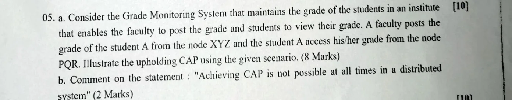
E1 Nov/Dec 2025 Q10 · Four families and a two-family comparison
State one technical feature for every family. Compare any two on the exact three axes in the prompt, with one concrete query for each.
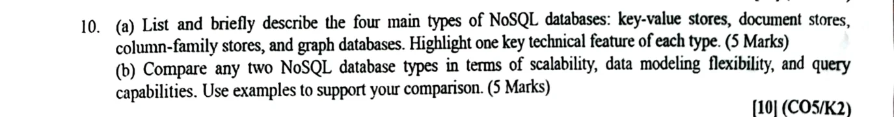
A1 Jul 2023 Q10 · CAP, BASE and session storage
Separate operations that can tolerate stale data from those that need coordinated correctness. For sessions, sketch the key, value, lookup and expiry.
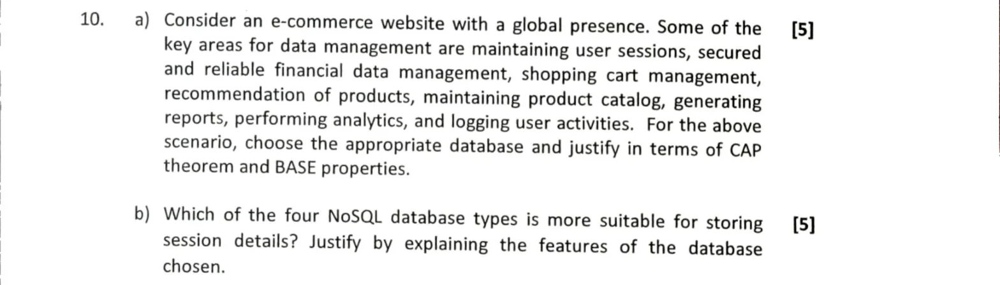
Evidence from each paper
| FAT sitting | Questions |
|---|---|
| B2 Apr/May 2023 | Part A Q3 · Required document-database practical with collection creation, inserts, update, aggregation and deletion. |
| A1 Jul 2023 | Q10(a–b) · Required CAP and BASE for e-commerce, plus a choice of model for session data. |
| F2 Jul/Aug 2023 | Q5(a–b) · Required CAP reasoning about two grade-monitoring nodes. |
| A1 Nov 2024 | Q8 · Required CAP trade-offs for an online shopping platform. |
| A2 Nov 2024 | Q10 · Required choice of NoSQL types for high-volume, low-latency e-commerce, with justification. |
| B1 Nov 2025 | Q7(i–ii) · Required CAP. Q10(a) · Four-family comparison as an OR option against Module 6 deadlock. |
| B2 Nov 2025 | Q10(a) OR Q10(b) · Required 10-mark slot. CAP or compare the major NoSQL families. |
| E1 Nov/Dec 2025 | Q10(a–b) · Required technical feature for each family and a two-family comparison. |
Module 8
Contemporary issues
0/8 actual papers had a question attributable to Module 8. The Fall 2026–27 syllabus lists the module title without named subtopics. CAP and the four NoSQL families belong to Module 7. Questions were classified by what they ask you to do, even where another topic shares the same course-outcome code.
Use the instructor’s Module 8 slides, assignment or stated FAT scope. For every topic they name, prepare the problem it addresses, how it works, one concrete use case and one trade-off. Once that is covered, use your practice time for the named topics in Modules 1–7.